| Código | Integrante |
|---|---|
| 2221909 | David Esteban Suarez Lozano |
| 2221906 | Thomas Alejandro Perez Rojas |
| 2221922 | Jesus David Santodomingo Carrascal |
En una arquitectura de microservicios sobre Kubernetes es difícil controlar hacia dónde va el tráfico entre servicios. Por ejemplo, cuesta enviar a una versión nueva solo las peticiones de ciertos usuarios para hacer pruebas A/B, canaries o feature flags. Un Service Mesh resuelve este problema con una capa de infraestructura: un proxy junto a cada pod intercepta el tráfico y aplica reglas de red. La aplicación no tiene que cambiar su código.
Objetivo del reto: configurar un Service Mesh (en nuestro caso Linkerd) para que las peticiones con una cabecera HTTP concreta lleguen a una versión específica de la aplicación (v2). El resto debe seguir llegando a la versión estable (v1). Además hay que comprobar el comportamiento con curl/Postman y con las herramientas de observabilidad de la malla.
| Petición | Versión que debe responder |
|---|---|
X-Feature-Flag: new-version | v2 (nueva) |
User-Agent: experimental | v2 (nueva) |
| Sin cabecera, o con cualquier otro valor | v1 (estable) |
Linkerd es un Service Mesh de la CNCF. Inyecta en cada pod un sidecar llamado linkerd-proxy, un microproxy escrito en Rust. Ese proxy captura el tráfico de entrada y de salida del pod con reglas de iptables que instala el contenedor linkerd-init. Así el proxy puede aplicar políticas, cifrar con mTLS automáticamente y medir tasa de éxito, RPS y latencia sin modificar la aplicación. En la versión utilizada (edge-26.10.1) el proxy se inyecta como sidecar nativo de Kubernetes, es decir, como un initContainer con restartPolicy: Always.
HTTPRoute en lugar de TrafficSplit + ServiceProfileEl enunciado menciona TrafficSplit (de la especificación SMI) y ServiceProfile. En las versiones actuales de Linkerd, SMI y TrafficSplit están deprecados. El mecanismo oficial para ruteo dinámico es el recurso HTTPRoute de Gateway API, el estándar de Kubernetes, en su modalidad GAMMA (malla de servicios). En esa modalidad el parentRef de la ruta es un Service y no un Gateway.
TrafficSplit solo permitía repartir por pesos. HTTPRoute permite además condiciones matches por cabecera, ruta, método o parámetro, que es justo lo que pide el reto. Al ser un estándar, la misma definición sirve con poco o ningún cambio en otras mallas, como Istio.
En Linkerd las reglas de ruteo se aplican en el proxy del cliente, es decir, el proxy del pod que envía la petición. Por eso quien llama al servicio tiene que estar dentro de la malla. Lo comprobamos de forma experimental en la sección 8.2.
PC (curl / Postman)
│ http://localhost:8080
▼
kind: puerto 8080 del host → NodePort 30080
▼
┌─ namespace reto4 (linkerd.io/inject: enabled) ─────────────────────┐
│ │
│ gateway (nginx + linkerd-proxy) │
│ │ pide Service "web" │
│ ▼ │
│ HTTPRoute web-por-cabecera (se evalúa en el proxy del gateway) │
│ ├─ x-feature-flag=new-version ó user-agent=experimental │
│ │ ──► Service web-v2 ──► pod web-v2 (1 réplica) │
│ └─ cualquier otra petición │
│ ──► Service web-v1 ──► pods web-v1 (2 réplicas) │
│ │
│ client (curl + linkerd-proxy): pruebas desde dentro del clúster │
└────────────────────────────────────────────────────────────────────┘
APP_VERSION=v1|v2. Cada respuesta es un JSON que indica la versión, el pod que atendió y las cabeceras recibidas, y lleva la cabecera X-App-Version.web: es el nombre que usan los clientes. Su selector apunta solo a v1. Así, si se borra la ruta, el tráfico vuelve a la versión estable (comportamiento seguro por defecto).web-v1 y web-v2: son los backends a los que apunta el HTTPRoute.web. Gracias a él, las peticiones que salen del PC pasan por un proxy cliente de Linkerd y se les aplica la ruta.curl para probar desde dentro del clúster.| Componente | Versión | Uso |
|---|---|---|
| Docker Desktop (Windows 11) | 29.9.1 | Motor de contenedores |
| kind | 0.33.0 (nodo kindest/node:v1.37.0) | Clúster Kubernetes local |
| kubectl | 1.36.1 (servidor 1.37.0) | CLI de Kubernetes |
| Linkerd (CLI y control plane) | edge-26.10.1 | Service Mesh |
| Linkerd viz | edge-26.10.1 | Métricas, tap y dashboard (incluye Prometheus) |
| Gateway API CRDs | v1.2.1 (standard) | Recurso HTTPRoute |
| Node.js / nginx / curl | 22-alpine / 1.27-alpine / 8.11.1 | Aplicación, gateway y cliente |
Todo el procedimiento está automatizado en scripts bash, ejecutados desde Git Bash en la raíz del proyecto:
scripts/01-crear-cluster.sh # clúster kind "reto4" con el puerto 8080 publicado scripts/02-instalar-linkerd.sh # Gateway API CRDs + linkerd install + viz scripts/03-desplegar-app.sh # build v1/v2, kind load, kubectl apply k8s/ scripts/04-aplicar-rutas.sh header # HTTPRoute por cabecera scripts/05-probar.sh 20 # 20 peticiones por caso y conteo por versión scripts/06-observabilidad.sh # stat, edges y dashboard
Se creó un clúster kind de un nodo. La configuración publica el NodePort 30080 en el puerto 8080 del PC, para que Postman/curl lleguen al gateway sin necesidad de port-forward.
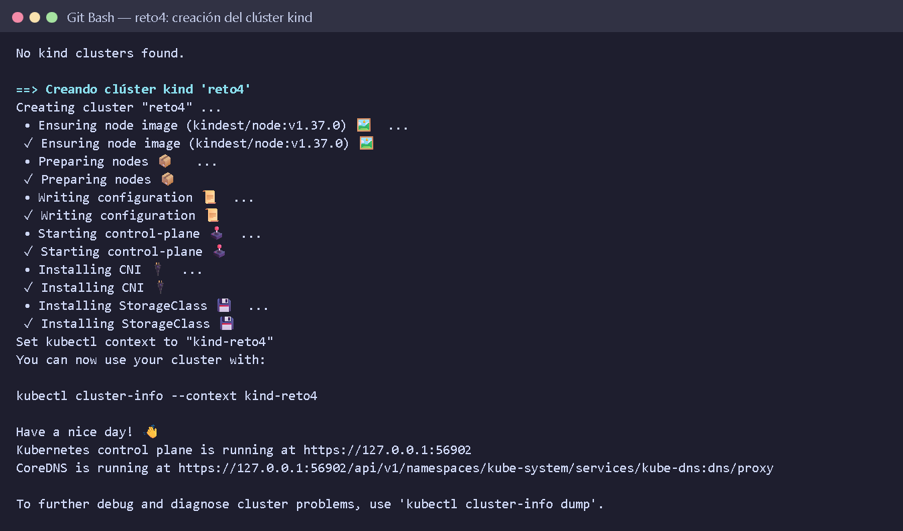
reto4.Primero se instalaron las CRDs de Gateway API (necesarias para HTTPRoute), después las CRDs y el control plane de Linkerd (linkerd install --crds y linkerd install), y por último la extensión viz. Todas las verificaciones de linkerd check salieron correctas: certificados de identidad, webhooks, versión del plano de control y plano de datos.
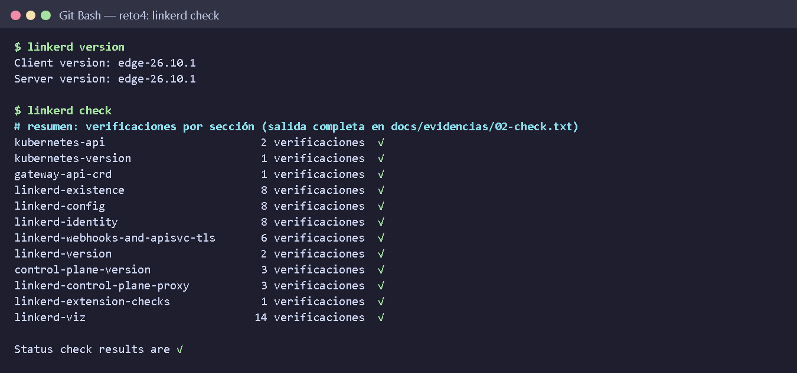
linkerd version y resumen de linkerd check: 57 verificaciones, todas en verde.El namespace reto4 tiene la anotación linkerd.io/inject: enabled, así que el proxy injector de Linkerd agrega el sidecar a todo pod que se crea en él. La Figura 3 muestra que los cinco pods tienen linkerd-init y linkerd-proxy, y que las imágenes reto4-app:v1 y reto4-app:v2 corren en Deployments separados.
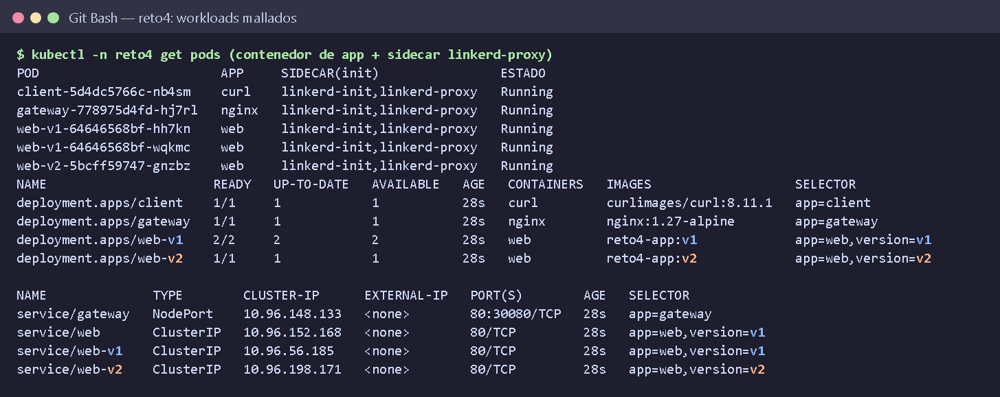
reto4, todos con el sidecar de Linkerd.HTTPRoute)La ruta tiene dos reglas. Linkerd aplica la primera regla cuya condición se cumple:
matches con dos alternativas que se combinan con OR: la cabecera x-feature-flag con valor exacto new-version, o la cabecera user-agent con valor experimental. Si se cumple alguna, el tráfico va a web-v2.matches que funciona como valor por defecto y envía todo lo demás a web-v1.Según Gateway API, los nombres de cabecera no distinguen mayúsculas de minúsculas, y el valor se compara de forma exacta. El controlador linkerd.io/policy-controller aceptó la ruta: tiene las condiciones Accepted=True y ResolvedRefs=True.
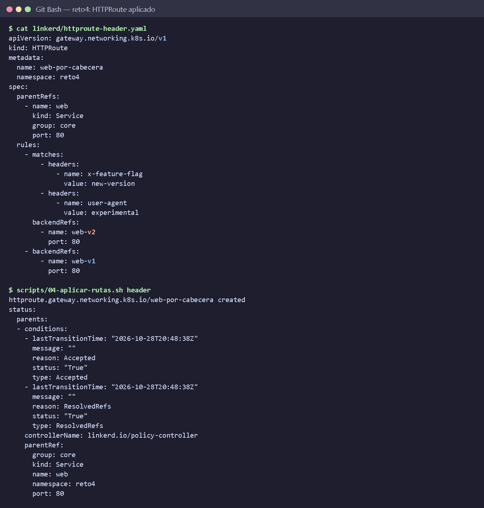
HTTPRoute y su estado tras aplicarlo.Primero se ejecutaron las pruebas sin HTTPRoute. Las 100 peticiones (20 por caso) llegaron a v1, incluso las que llevaban la cabecera. Esto confirma que la cabecera por sí sola no cambia nada: el desvío lo hace la malla.
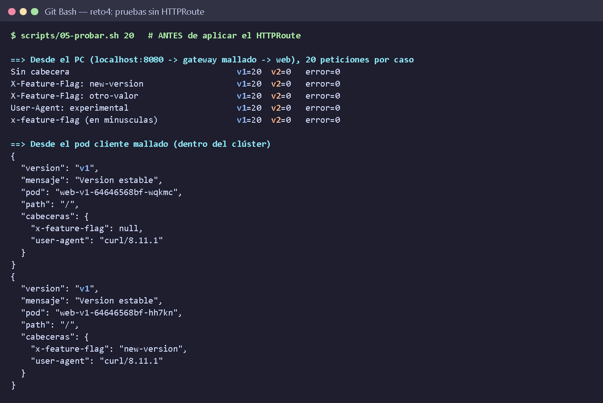
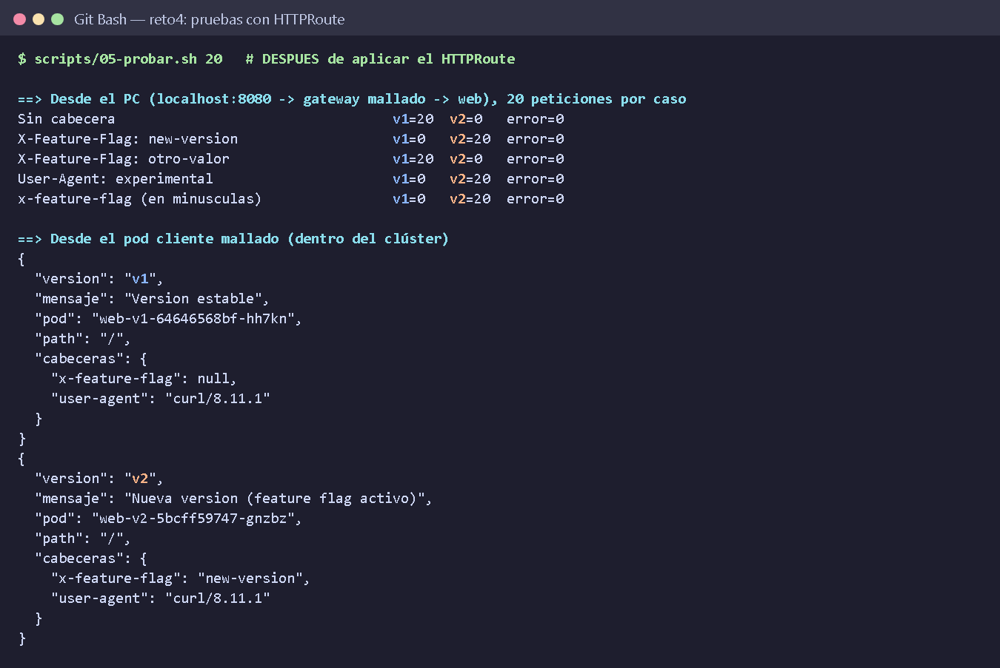
| Caso (20 peticiones c/u) | Esperado | v1 | v2 | Resultado |
|---|---|---|---|---|
| Sin cabecera | v1 | 20 | 0 | Correcto |
X-Feature-Flag: new-version | v2 | 0 | 20 | Correcto |
X-Feature-Flag: otro-valor | v1 | 20 | 0 | Correcto |
User-Agent: experimental | v2 | 0 | 20 | Correcto |
x-feature-flag: new-version (nombre en minúsculas) | v2 | 0 | 20 | Correcto |
Las 100 peticiones llegaron a la versión esperada, sin errores. Dentro del clúster, el pod client obtuvo el mismo resultado: sin cabecera respondió web-v1-… y con X-Feature-Flag: new-version respondió web-v2-5bcff59747-gnzbz.
curl -iLa cabecera de respuesta x-app-version y el campo pod del JSON confirman qué versión atendió cada petición. Estas mismas peticiones están en la colección de Postman docs/reto4.postman_collection.json.
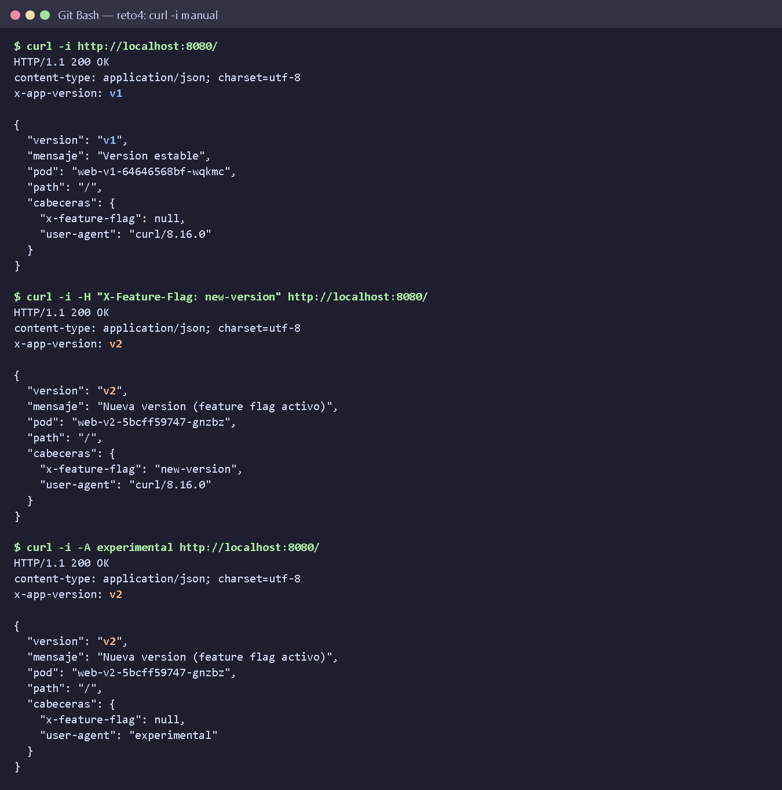
X-Feature-Flag (v2) y con User-Agent: experimental (v2).Para esta sección se generó tráfico continuo mezclado: por cada ciclo, dos peticiones sin cabecera, una con X-Feature-Flag y una con User-Agent: experimental. Con esa mezcla se espera un reparto 50/50 entre v1 y v2.
linkerd viz stat muestra la tasa de éxito (100 %), los RPS y las latencias p50/p95/p99 de cada workload. linkerd viz edges muestra las conexiones entre workloads: gateway → web-v1 y gateway → web-v2 están marcadas como SECURED (√), es decir, el tráfico va cifrado con mTLS automático sin haber configurado certificados en la aplicación.
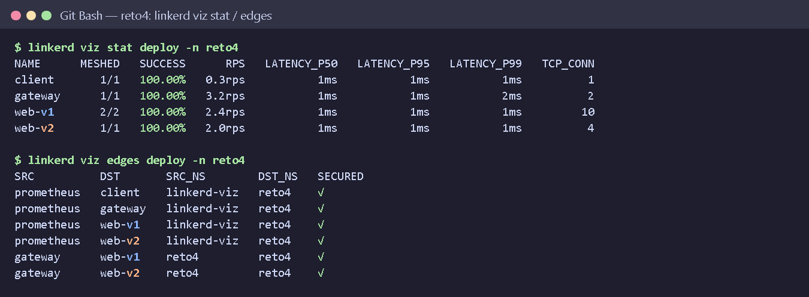
linkerd viz stat y linkerd viz edges (mTLS).linkerd viz stat-outbound muestra las métricas desde el punto de vista del cliente (gateway). El tráfico hacia web:80 pasa por la ruta web-por-cabecera (tipo HTTPRoute) y se reparte entre los backends web-v1:80 y web-v2:80 con 1,55 RPS cada uno, que es el 50/50 esperado. En linkerd viz tap sobre web-v2, las peticiones llegan con :authority=web.reto4.svc.cluster.local: el cliente pidió el servicio web y la malla lo envió a v2. Todas llevan tls=true.
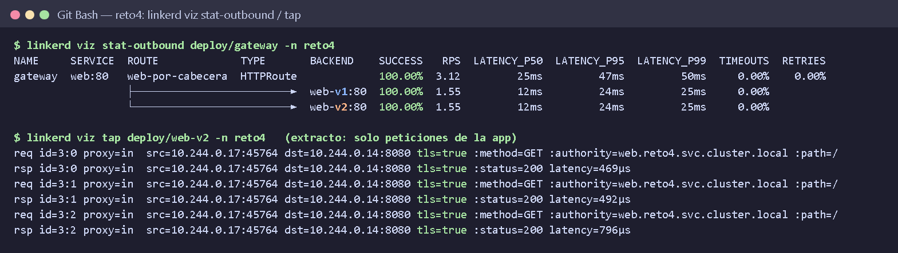
stat-outbound) y tráfico en vivo hacia v2 (tap).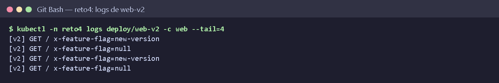
web-v2: llegan peticiones con x-feature-flag=new-version y otras con x-feature-flag=null; estas últimas son las que traen User-Agent: experimental.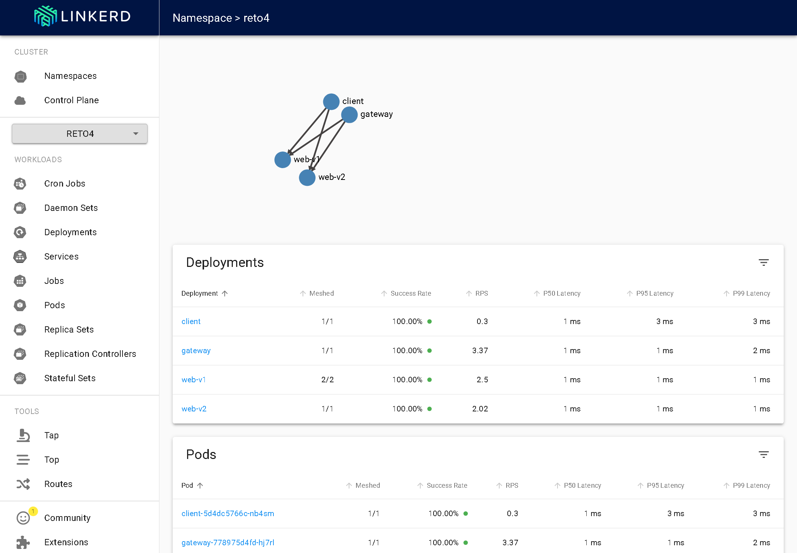
reto4: grafo de tráfico y métricas por deployment.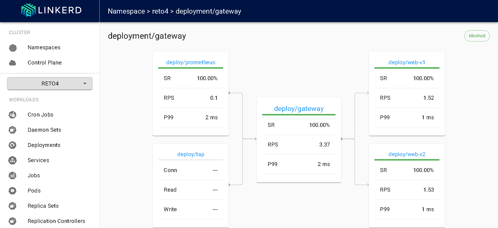
gateway: el tráfico sale hacia web-v1 y web-v2 según la regla del HTTPRoute.Se aplicó la variante httproute-canary.yaml. La regla por cabecera se mantiene, y el tráfico sin cabecera se reparte 90/10 entre v1 y v2. De 200 peticiones sin cabecera, 181 fueron a v1 y 19 a v2 (90,5 % / 9,5 %). Las 20 peticiones con cabecera fueron todas a v2. Así se combina un feature flag para probadores internos con un canary gradual para el resto de usuarios. Al terminar se restauró la ruta del reto.
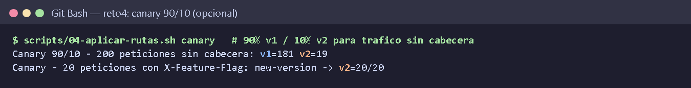
Para comprobar que el ruteo ocurre en el proxy del cliente, se hizo un kubectl port-forward directo al Service web. Así la petición no sale por ningún linkerd-proxy cliente. Con la cabecera X-Feature-Flag: new-version, las 5 respuestas vinieron de v1. Conclusión: en Linkerd, para que el ruteo funcione, quien llama debe estar dentro de la malla. Por eso la solución usa un gateway mallado como punto de entrada.
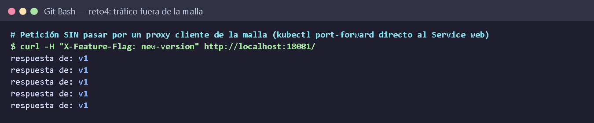
| Aspecto | Balanceador L4 | Ingress (L7 en el borde) | Service Mesh (Linkerd) |
|---|---|---|---|
| Dónde decide | Solo en la entrada | Solo en la entrada (norte-sur) | En cada llamada, también entre servicios (este-oeste) |
| Ruteo por cabeceras | No (no interpreta HTTP) | Sí, solo para tráfico externo | Sí, para cualquier llamada entre servicios |
| Cifrado entre servicios | No | No (el TLS termina en el borde) | mTLS automático con identidad por workload |
| Métricas | Mínimas | Solo del borde | Tasa de éxito, RPS y latencia por workload y ruta, sin instrumentar código |
| Reintentos y timeouts | No | Limitados | Declarativos por ruta |
| Costo | Bajo | Bajo | Un sidecar por pod (CPU/RAM extra) y más componentes que operar |
Un Ingress basta para publicar una aplicación hacia Internet. Pero si el servicio A llama al servicio B, el Ingress no interviene en esa llamada interna. El Service Mesh sí: permite pruebas A/B, canaries y feature flags a nivel de servicio interno, cifra todo el tráfico este-oeste y da observabilidad uniforme. Su costo es un proxy por pod y la complejidad de operar el plano de control. Linkerd reduce ese costo frente a Istio porque su proxy es muy ligero; en nuestras pruebas la latencia p99 fue de 1–2 ms.
| Problema | Causa | Solución |
|---|---|---|
docker, kubectl y kind no se encontraban en Git Bash, aunque estaban instalados. | Docker Desktop y winget instalan los binarios en carpetas que no estaban en el PATH de esa terminal. | scripts/env.sh agrega esas carpetas y bin/ (CLI de Linkerd) al PATH de todos los scripts. |
El listado de contenedores no mostraba linkerd-proxy. | Linkerd edge-26 inyecta el proxy como sidecar nativo (initContainer). | Se consulta también .spec.initContainers para evidenciar la inyección. |
| Una petición directa al Service con la cabecera seguía yendo a v1. | Linkerd aplica HTTPRoute en el proxy del cliente. | Punto de entrada mallado (gateway nginx) y pod cliente mallado. |
El enunciado menciona TrafficSplit/ServiceProfile. | SMI está deprecado en Linkerd moderno. | Se usa HTTPRoute de Gateway API (GAMMA), que además permite matches por cabecera. |
X-Feature-Flag: new-version o User-Agent: experimental lleva el tráfico a v2, y todo lo demás va a v1. El 100 % de las peticiones de prueba llegó a la versión esperada.HTTPRoute, el Service web solo apunta a v1.Todo el código, los manifiestos, los scripts, la presentación y el video de funcionamiento están en el repositorio público:
Estructura del repositorio app/ server.js + Dockerfile k8s/ namespace, deployments v1/v2, services, client, gateway linkerd/ httproute-header.yaml, httproute-canary.yaml scripts/ 00..06 + 99-limpiar.sh kind-config.yaml clúster kind (8080 → NodePort 30080) docs/ informe, capturas, evidencias (salidas en texto), colección Postman tools/ capturar.js (genera las capturas PNG) Pasos scripts/00-verificar-herramientas.sh scripts/01-crear-cluster.sh scripts/02-instalar-linkerd.sh scripts/03-desplegar-app.sh scripts/05-probar.sh # línea base scripts/04-aplicar-rutas.sh header scripts/05-probar.sh # con la ruta scripts/06-observabilidad.sh scripts/99-limpiar.sh # borra el clúster